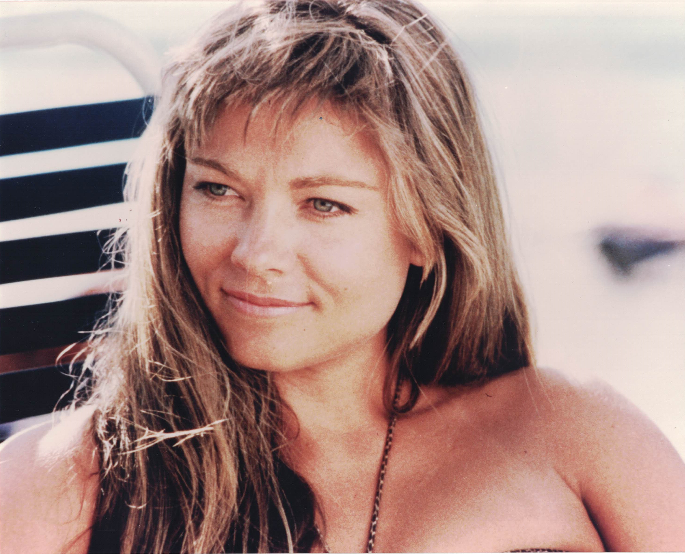

Product No. HEC-0093
$10.99
Shipping: $8.95
Description
8x10 color photograph
Full Description
Theresa Russell is an American actress known for her intense, unconventional performances in films spanning drama, crime, mystery, and psychological thrillers. Born Theresa Lynn Paup on March 20, 1957, in San Diego, California, she began modeling as a teenager before turning to acting. Russell made an impressive film debut opposite Robert De Niro in "The Last Tycoon" (1976), directed by Elia Kazan. She soon gained attention for taking on complex and often provocative roles that distinguished her from many actresses of her generation. She became closely associated with director Nicolas Roeg, whom she later married. Their collaborations included "Bad Timing," "Eureka," "Insignificance," "Track 29," and "Cold Heaven." Russell's performances in these films helped establish her reputation for portraying emotionally complicated and psychologically challenging characters. She also starred in the popular thriller "Black Widow" (1987), playing a mysterious woman who marries wealthy men who subsequently die under suspicious circumstances. Her other film credits include "Straight Time," "The Razor's Edge," "Impulse," "Kafka," "Wild Things," and "Spider-Man 3." Over the course of her career, Russell has worked with respected directors and actors in both mainstream and independent productions. Her willingness to take on difficult and unconventional roles has earned her a distinctive place in modern film history. Theresa Russell remains especially recognizable to collectors of 1970s and 1980s cinema, psychological thrillers, and Hollywood memorabilia, with signed photographs and autographs continuing to attract film fans.
Condition
Excellent condition